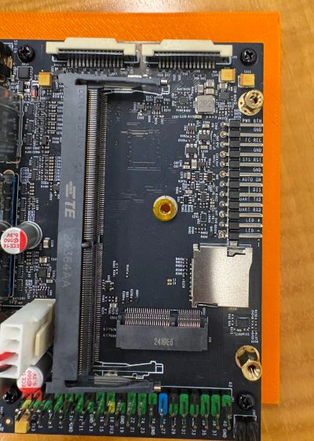
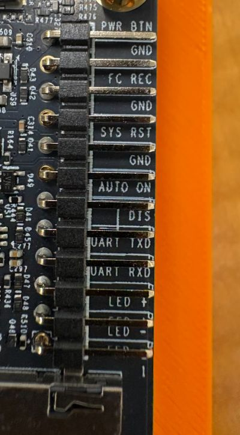
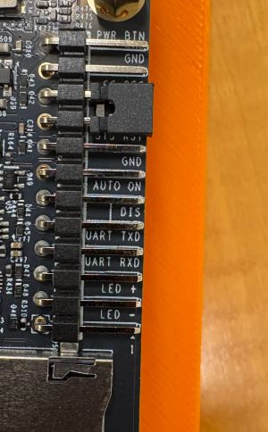
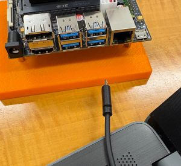

Jetpack OS Installation Guide
Prerequisites
- An Internet connection
- Computer with Ubuntu 18.04.6 LTS installed
- Install of NVIDIA SDK Manager on that computer for Jetpack 4.6.6
- Pin jumper for the Jetson Nano
- Micro-USB to USB A cable to keep the Jetson Nano connected to the computer
- Make sure the computer is connected to a power source that is reliable
Setup and Installation
This is the Jetson Nano B01 board with the card with the heatsink removed from the SODIMM slot. The pins can be seen below it.




NVIDIA provides a more comprehensive guide of using NVIDIA SDK Manager.